Fun with Flow Models
Denoising, sampling, editing and optical illusions with a pretrained text-to-image flow model, then a UNet trained from scratch to turn noise into MNIST digits, with all CS280A bells & whistles.
Part A: every required section on Constable's Wivenhoe Park, my pixel art and my drawings; two working hybrids (skull / waterfall, panda / bamboo); CS280A anagrams with a 90° rotation and color negation, and a course logo. Part B: the pure-noise denoiser hits the measured mean-digit floor (0.0673); class-conditioned samples are clean after one epoch; the improved time-only UNet raises confidently legible samples from 73.0% to 79.4%. Extras: inpainting with RePaint, step-count studies in both parts, 4- and 6-way anagrams, and "make it real".
Exploring the Power of Flow Models
Everything in Part A uses one pretrained text-to-image model, PixNerd-XXL-P16-T2I, which works directly on 512×512 pixels. Fixed settings throughout: seed 180, Euler step \(h = 0.02\) (50 steps from pure noise), classifier-free guidance \(w = 7\), Tesla T4 in float32 (peak memory 11.4 GiB). No training: every result below is a different way of integrating the same learned velocity field.
The Flow-Matching Convention
Time runs from noise at \(t = 0\) to data at \(t = 1\). A training input is a straight-line mix of a clean image and Gaussian noise, and the network predicts the velocity of that line:
Each training path is straight, but the model only sees \(x_t\), not which clean image it came from, so it learns the average direction over every image consistent with \(x_t\). Following that averaged field traces a curved path. That one fact explains most of Section 1: why a single jump is blurry, why many small steps are sharp, and why the update looks the way it does.
My inputs: John Constable's Wivenhoe Park (1816) for Sections 1.1–1.5; a pixel-art Mount Fuji, a pen-and-ink fantasy tower and two of my own drawings for Section 3.1; and more of my chosen images for the extras. All are center-cropped to 512×512. All my images and credits are at the end.
1.1 Noisy Training Inputs
One noise tensor (seed 180) is drawn once and reused at every \(t\), so only the mix changes across the row. The image is also scaled down by \(t\), not just noised, which is why \(t = 0.25\) is grayer as well as noisier. The notebook asserts both endpoints exactly: \(t = 0\) returns the noise and \(t = 1\) returns the image.
def interpolate(image, noise, t):
return (1 - t) * noise + t * image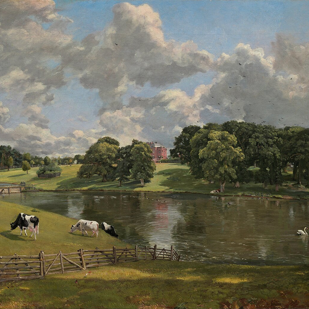
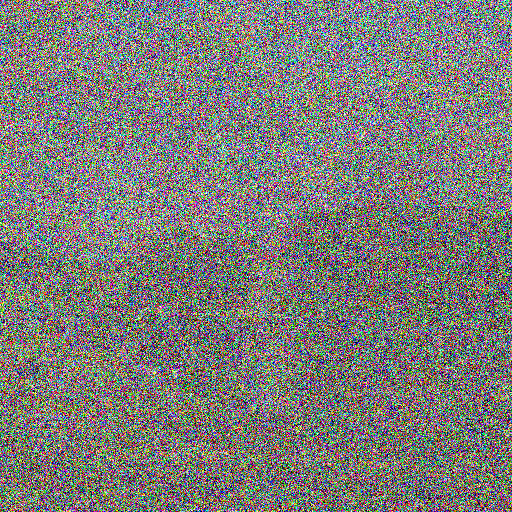
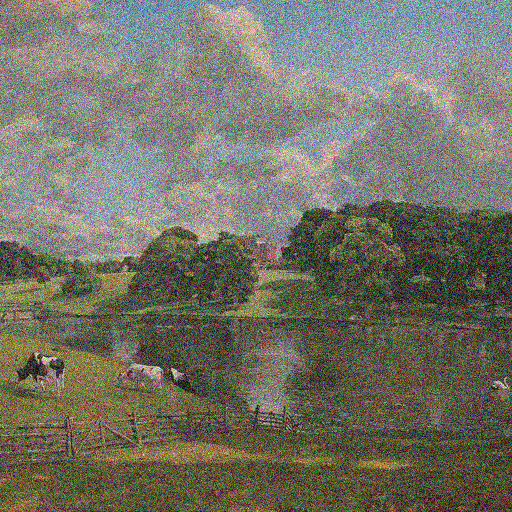
1.2 Classical Denoising
Dividing by \(t\) restores the image's amplitude but scales the noise by the same factor: its standard deviation becomes \((1-t)/t\), which is 3 at \(t = 0.25\), wider than the image's whole \([-1, 1]\) range. I swept σ over {0.5, 1, 1.5, 2, 3, 4, 6, 8, 12, 16} and kept the σ with the lowest MSE to the known original.
| t | noise std after ÷t | best σ | MSE |
|---|---|---|---|
| 0.25 | 3.00 | 12 | 0.0238 |
| 0.50 | 1.00 | 6 | 0.0153 |
| 0.75 | 0.33 | 2 | 0.0089 |
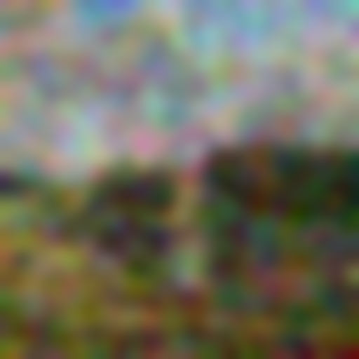
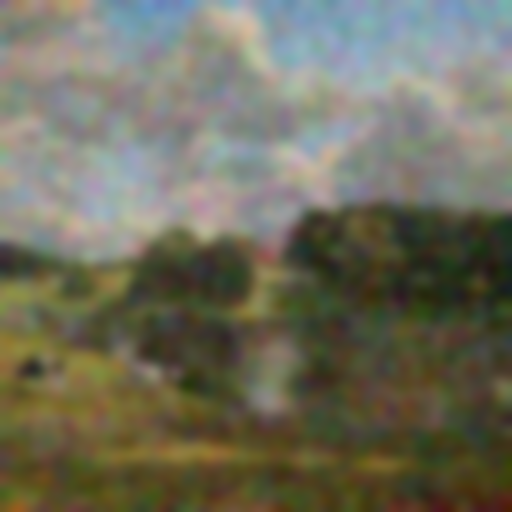
The best σ grows quickly as the noise grows (2 → 6 → 12). At \(t = 0.25\) the only way to beat the noise is to erase almost all structure, leaving colored blobs where the trees and sky were. A blur cannot tell noise from detail: both are high frequencies, so it removes both.
1.3 One-Step Denoising
One velocity evaluation extrapolates straight to the end: \(\hat x_1 = x_t + (1-t)\,v_\theta(x_t, t, c)\) with \(c\) = "a high quality photo". The prediction is a velocity, so it is added for the remaining time \(1 - t\), not subtracted like a noise estimate.
def one_step_denoise(x, t, condition, predict_velocity):
return x + (1 - t) * predict_velocity(x, t, condition)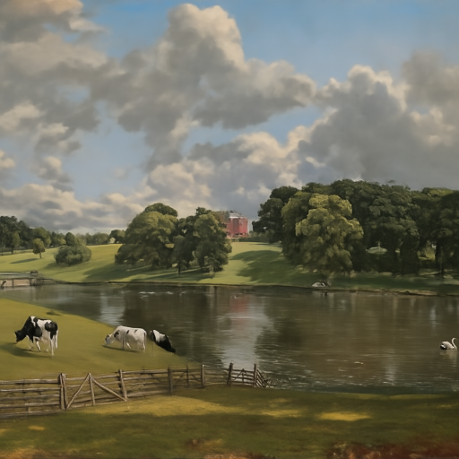
Already far better than blurring (MSE 0.0092 vs 0.0153 at \(t = 0.5\)), because the model knows what images look like. From \(t = 0.25\), though, the result is a soft, painterly guess: the house, cows and fence are gone, and the trees are smooth shapes. That is the averaging from the convention above made visible. When many clean images are consistent with the input, one step lands on their average, and an average of sharp images is blurry.
1.4 Visualizing Velocity
I know the exact update that should be added, \(x_1 - x_t = (1-t)(x_1 - \epsilon)\), so I can compare it with what the model adds, \((1-t)\hat v_t\), and map the per-pixel error \(E_t = \sqrt{\text{mean}_{\text{RGB}}[(1-t)(\hat v_t - v_{\text{gt}})]^2}\). All six updates share one symmetric scale, ±1.78 with zero at middle gray. The three error maps share one scale from 0 to 0.345. Both limits are the 99th percentile over all three times: the true maxima (4.33 and 1.12) come from a handful of noise outliers and would flatten everything else to gray or black.
@torch.inference_mode()
def velocity_diagnostics(x_t, t, clean_image, epsilon, condition, predict_velocity):
v_hat = predict_velocity(x_t, t, condition)
predicted_update = (1 - t) * v_hat
ground_truth_update = (1 - t) * (clean_image - epsilon) # == clean_image - x_t
error_map = ((predicted_update - ground_truth_update) ** 2).mean(dim=1).sqrt()
return predicted_update, ground_truth_update, error_map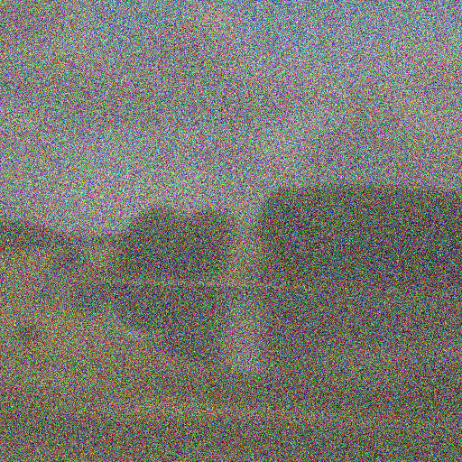
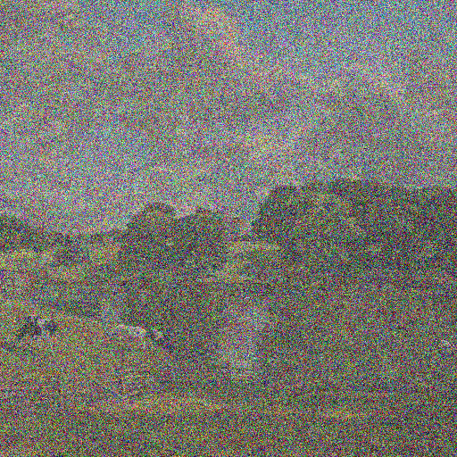
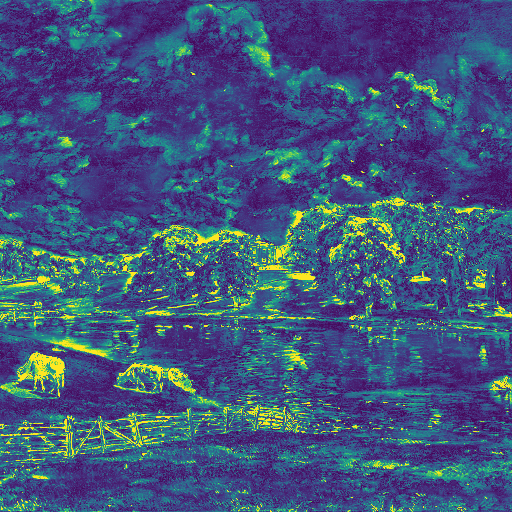
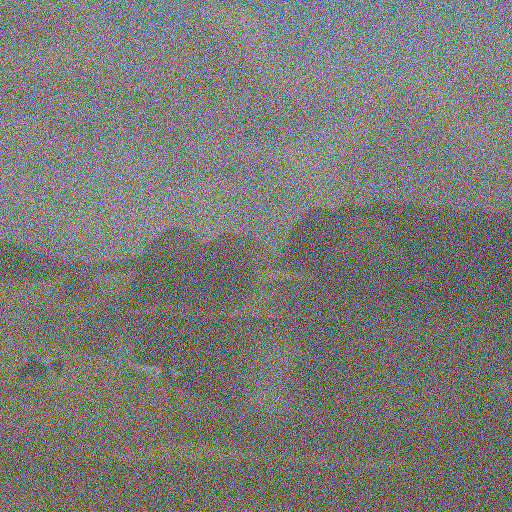
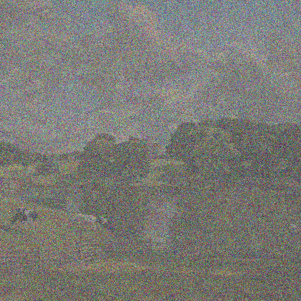
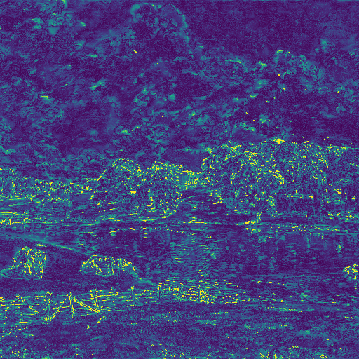
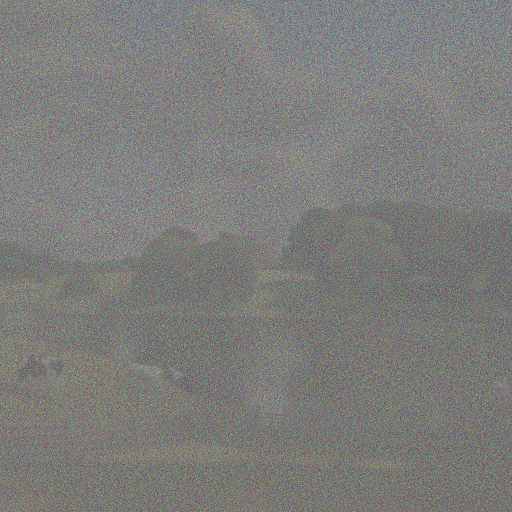
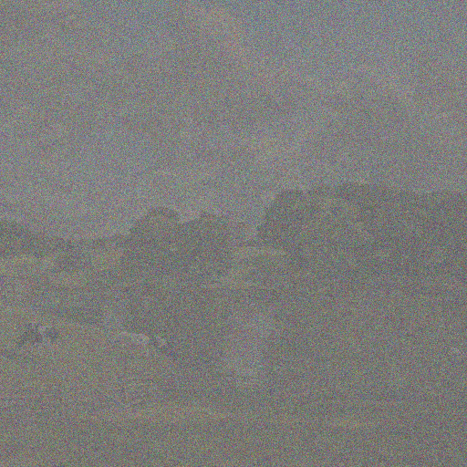
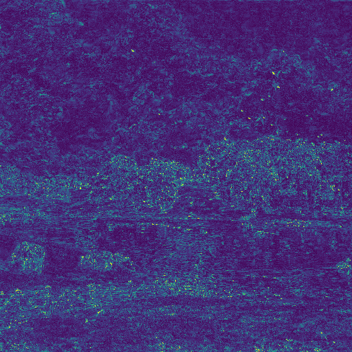
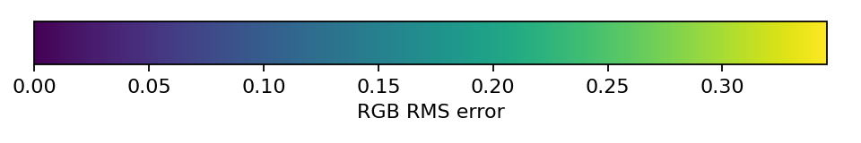
| t | mean |ground-truth update| | mean RMS error | error / update |
|---|---|---|---|
| 0.25 | 0.650 | 0.098 | 0.15 |
| 0.50 | 0.434 | 0.071 | 0.16 |
| 0.75 | 0.217 | 0.051 | 0.24 |
The ground-truth update contains the exact noise to remove, so it is grainy. The prediction is smooth, because the model cannot know the particular noise sample and predicts its expected value. The error is therefore largest exactly where the image has fine structure the model cannot recover: the tree line, the fence and the cows light up at \(t = 0.25\), while the smooth sky stays dark. As \(t\) grows, both the update and the error shrink. The error relative to the update rises from 0.15 to 0.24, because late in the path what remains to be added is mostly fine detail, the hardest part to predict.
1.5 Euler Sampling
Euler integration takes a small step along the current velocity and asks again: \(x_{t+h} = x_t + h\,v_\theta(x_t, t, c)\). My sampler fixes the number of steps up front, \(\lceil (1 - t_0)/h \rceil\), and computes each time as \(t_0 + kh\) instead of accumulating \(t \mathrel{+}= h\), so float round-off can never add an extra sliver of a step; the last step is shortened to land exactly on \(t = 1\). Before using it, the notebook checks it against a constant velocity field: 50 full steps, 25 half steps, shortened final step: passed.
@torch.inference_mode()
def euler_sample(x_start, t_start, step_size, velocity):
x = x_start.float()
n = math.ceil(round((1.0 - t_start) / step_size, 9))
states = [(float(t_start), x.clone())]
for k in range(n):
t = t_start + k * step_size
h = min(step_size, 1.0 - t)
x = x + h * velocity(x, t)
t_next = 1.0 if k == n - 1 else t_start + (k + 1) * step_size
if (k + 1) % 5 == 0 or k == n - 1:
states.append((float(t_next), x.clone()))
return x, states
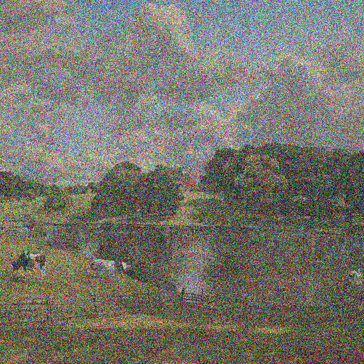
Euler is the sharpest by far: real cows, a fence, cloud texture. Yet its MSE (0.0106) is slightly worse than the one-step result (0.0092). This is not a contradiction. Many steps let the model commit to one specific, sharp image instead of the blurry average, and wherever that image's details differ from Constable's, MSE punishes them more than it punishes blur. MSE rewards the average, while a sampler should produce a plausible image.
1.6 Sampling from Pure Noise
The same sampler from \(t = 0\): 50 steps, prompt "a high quality photo", no guidance, seeds 180–184.


All five are people, which shows what the model associates with "a high quality photo". But the faces are often broken: seed 180 has no face at all, and seed 183 is a melted figure. Without guidance the sampler follows the plain conditional velocity, which still carries a lot of the model's generic "any image" behavior, so the prompt pulls only weakly.
2.1 Classifier-Free Guidance
CFG evaluates the same \(x_t\) twice, with the prompt and with the empty prompt, and extrapolates past the conditional prediction: \(v = v_c + w\,(v_c - v_u)\). The difference \(v_c - v_u\) is the part of the motion that exists because of the prompt; scaling it by \(w = 7\) pushes samples toward images much more typical of it. The notebook checks that \(w = 0\) reproduces the plain prediction exactly. Same five noises as 1.6:
def cfg_velocity(x, t, condition, w, predict_velocity, null_condition=''):
v_cond = predict_velocity(x, t, condition)
if w == 0:
return v_cond
v_uncond = predict_velocity(x, t, null_condition)
return v_cond + w * (v_cond - v_uncond)


Every sample becomes a clean, well-lit studio portrait. The cost is variety: five centered faces with the same framing, lighting and expression. The seeds still decide hair, background and pose (seed 182 keeps its hand at the cheek), so guidance changes how strongly the sampler commits, not where it starts.
3.1 Image-to-Image Editing
Noise a real image to \(t_0\) with the interpolation from 1.1, then run guided Euler sampling back to 1 (prompt "a high quality photo", \(w = 7\)). The starting time is the edit strength: at \(t_0 = 0.02\) only 2% of the image survives and the model mostly invents; at 0.5 half the signal remains and the model only retouches texture. Same noise (seed 180) for every edit.
def edit(image, noise, t_start, condition, predict_velocity, w=7, step_size=0.02):
x = interpolate(image, noise, t_start)
velocity = lambda x, t: cfg_velocity(x, t, condition, w, predict_velocity, null_condition)
return euler_sample(x, t_start, step_size, velocity)[0]Campanile

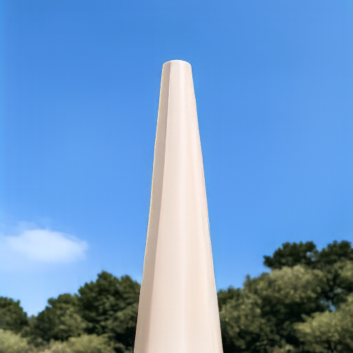
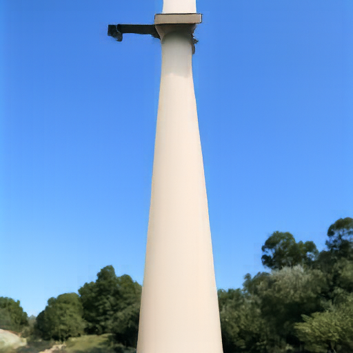
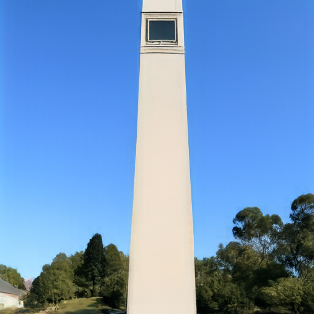
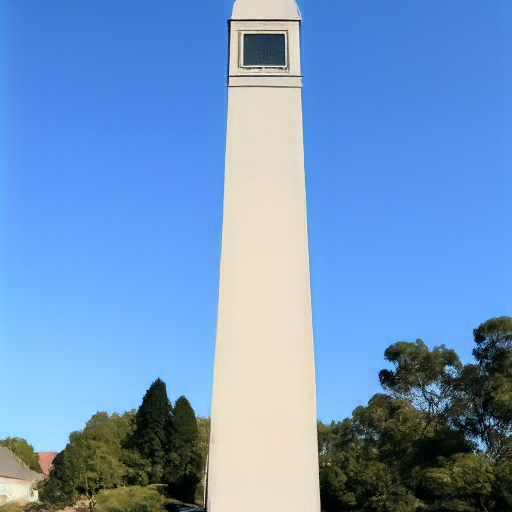
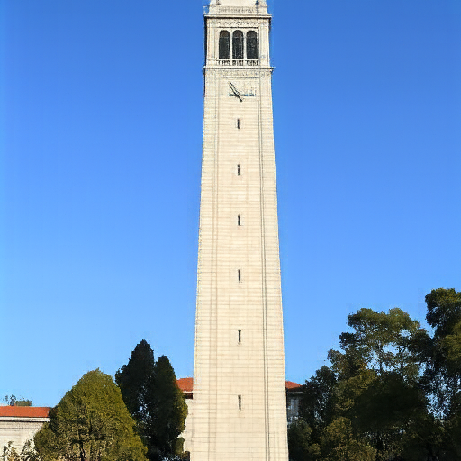
The tower's tall white column survives from the very first step: at 0.02 to 0.06 it is a white vase, a cone and a lamp post; from 0.10 on it is the Campanile with its clock face and trees. A tall, bright, centered shape is about all that 2% of the signal can carry.
Wivenhoe Park (Constable, 1816)

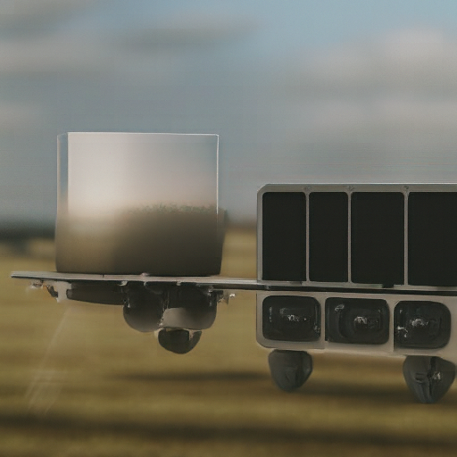
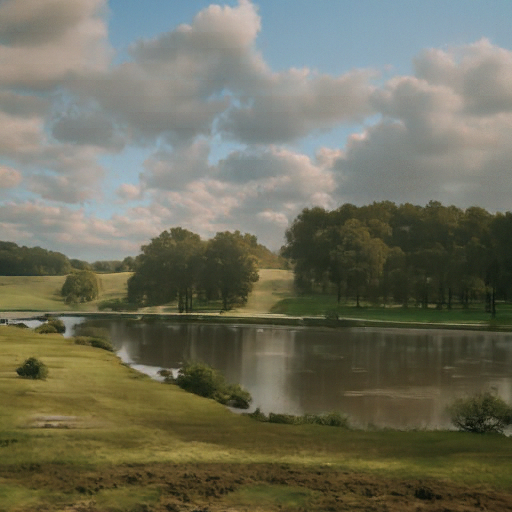
At 0.02 the "high quality photo" prior wins outright (a man at a laptop). From 0.04 to 0.14 only the horizontal banding survives, and it becomes a product shot and then a train in a field. From 0.25 on the painting returns, now looking like a photograph of the park. The scene's layout is the first thing to survive and the brushwork the last.
Mount Fuji, pixel art
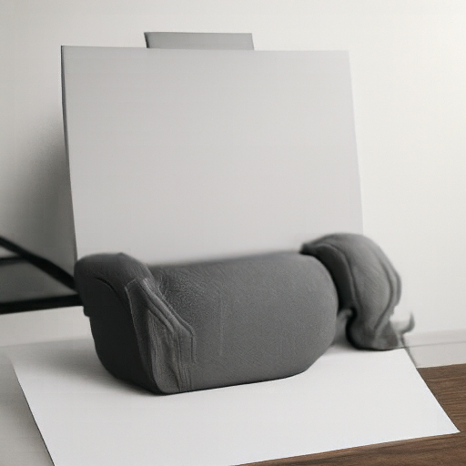
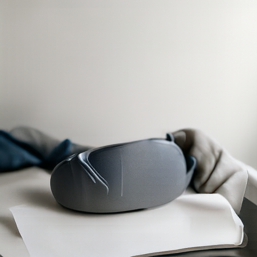
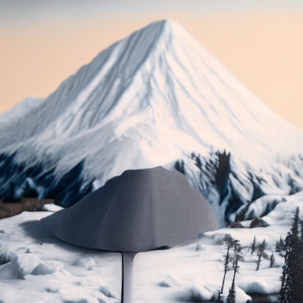
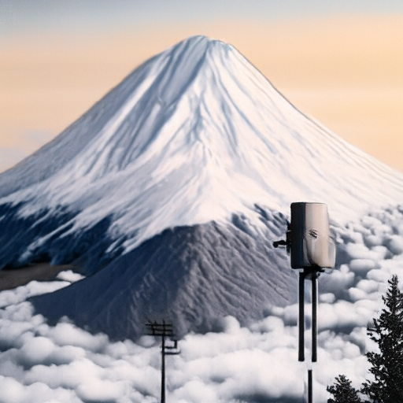
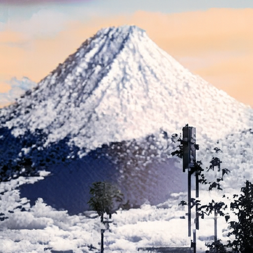
The bright triangle is lost at 0.02 to 0.06 (soft gray product shots), becomes a photographic snow-capped Fuji at 0.10 to 0.14, and turns back into pixels by 0.50. Between 0.10 and 0.25 the model "un-pixelates" the image, because "a high quality photo" has no room for hard square edges.
Web image: a pen-and-ink fantasy tower
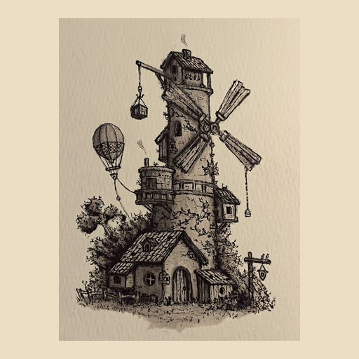
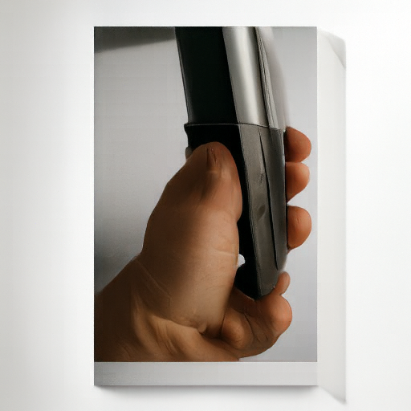
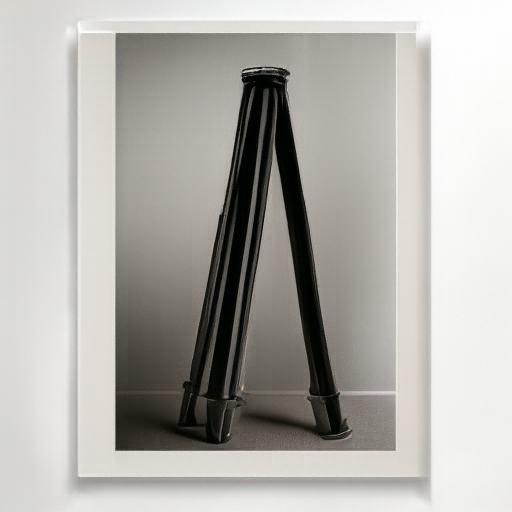
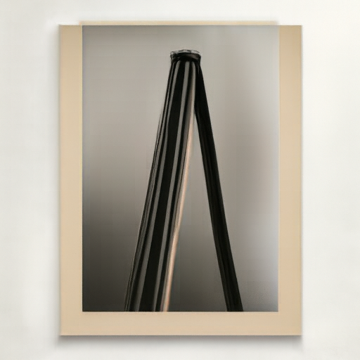
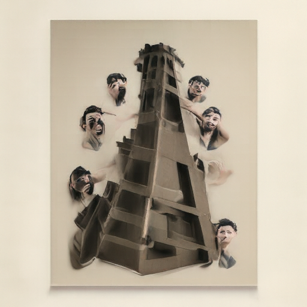
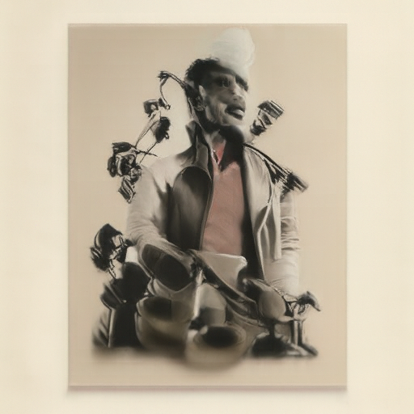
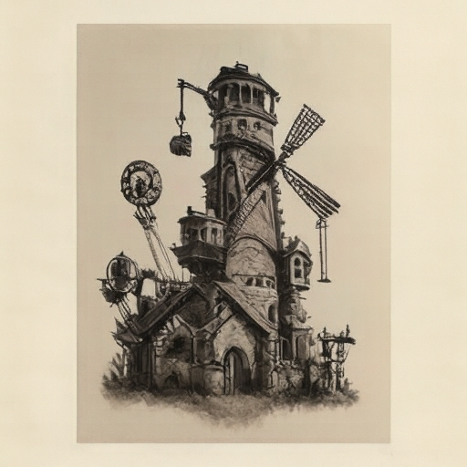
The sheet of paper survives everything: even at 0.02 there is a bright card, held in a hand. From 0.10 the tower is back, first as a 3-D paper sculpture and then as the ink drawing itself. The model reads "photo of a drawing" as the most likely photo.
My drawing: a confused pig
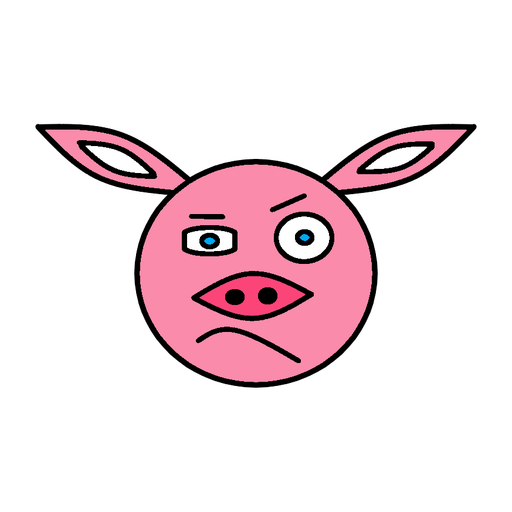
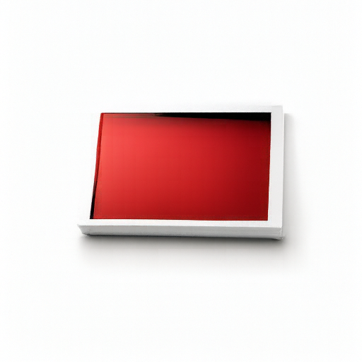
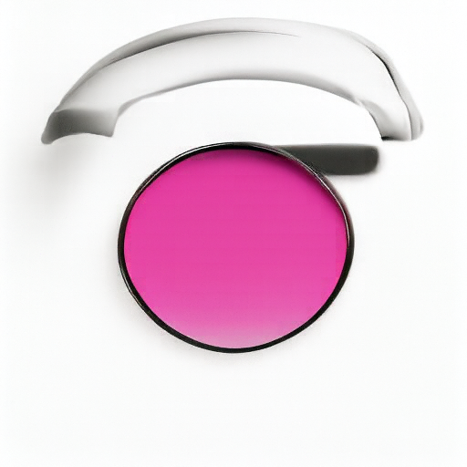
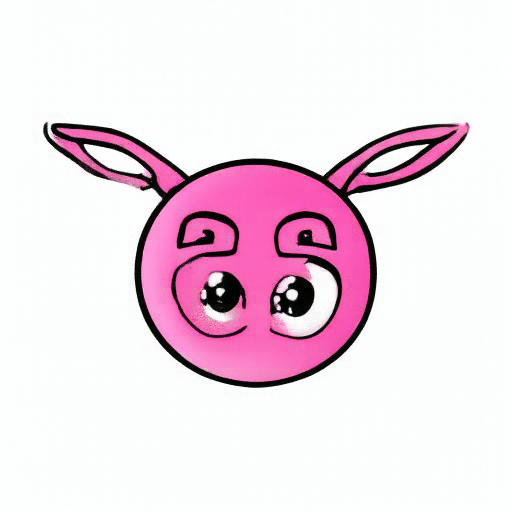
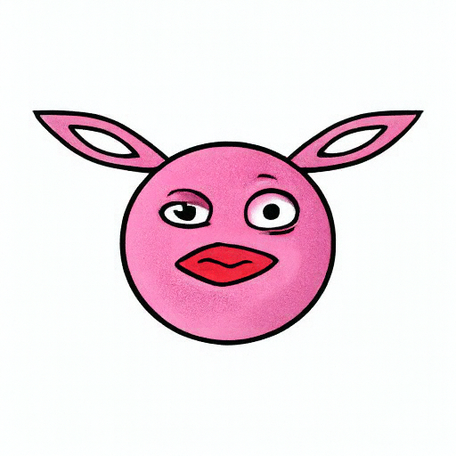
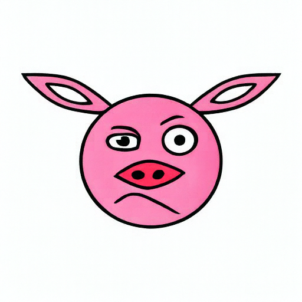
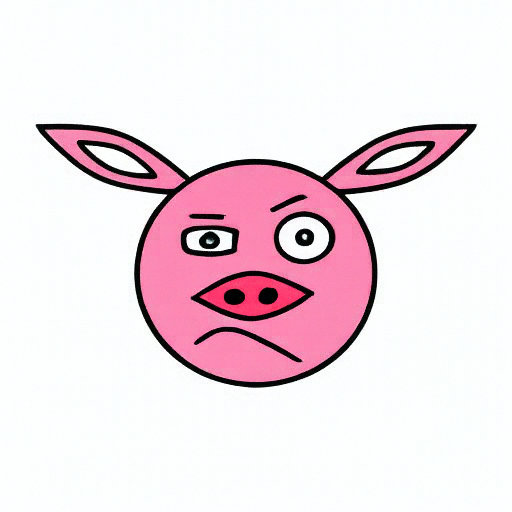
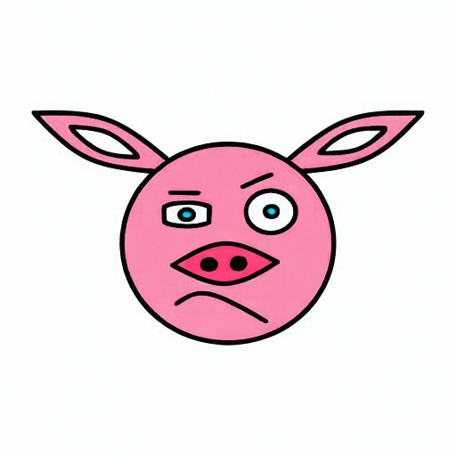
My drawing: a kart hitting a wall
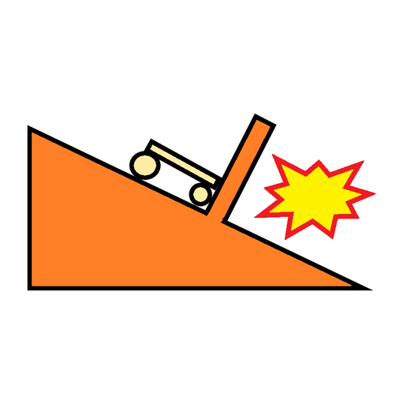
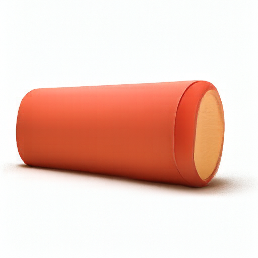
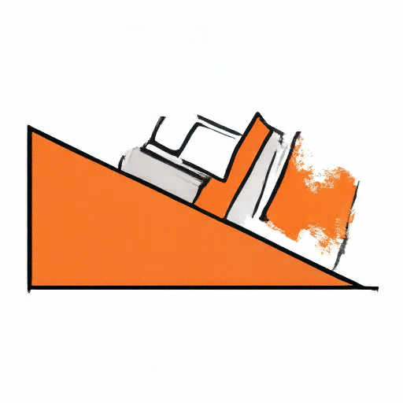
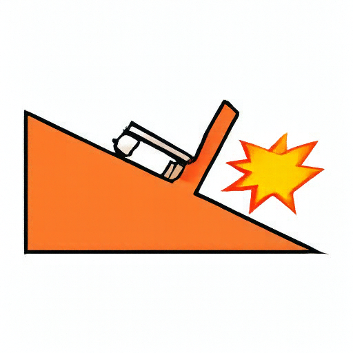
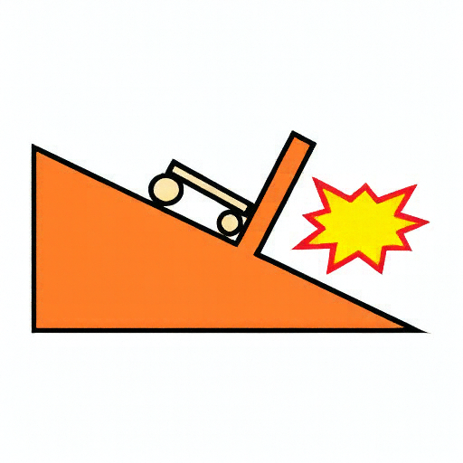
Flat-color drawings show the sharpest transition. At 0.02 to 0.04 the colors survive but not the content (a red tray, a pink ball, an orange roll, red letters). At 0.06 to 0.10 the drawings come back as cleaner, slightly 3-D cartoons (the pig gets lipstick at 0.10), and from 0.14 on they are left almost untouched. My first run composited these transparent PNGs onto black, which made the model invent dark computer screens around them; the final run puts them on white, as drawn.
3.2 Text-Guided Editing
The same procedure with the generic prompt replaced by a description of the edit. Low starting times give the prompt room to win; high ones keep the layout and change only the surface.
Campanile
“a photograph of a rocket standing on a launch pad against a clear blue sky”
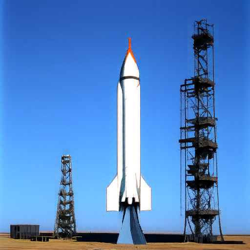
From 0.02 to 0.06 it is a genuine rocket on a launch pad, with gantry towers to the right where the Campanile had trees. By 0.10 to 0.14 it is a hybrid: the tower has turned into a white rocket body with a blue band, still with the clock-face window. From 0.25 the Campanile wins again.
Wivenhoe Park
“a high quality photograph of an English country park in winter, with a frozen lake and snow-covered trees”
The cleanest edit of the three: winter arrives by 0.02 and stays through 0.14, with bare trees, snow on the banks and a frozen lake in the same composition. At 0.25 only a pale, wintry cast remains, and at 0.50 the summer painting is back.
Pixel-art Fuji
“a high quality landscape photograph of Mount Fuji covered in snow at sunset, with trees in the foreground”
Sunset is easy because the input already has a pink sky: pink-orange skies and snow fields through 0.06, then a photographic white Fuji with dark pines from 0.10 to 0.25, and pixel art again at 0.50.
3.3 Visual Anagrams
One image, two prompts. At every Euler step the velocity is the average of the guided velocity for prompt \(a\) on the image and the guided velocity for prompt \(b\) on the image rotated 180°, rotated back. Rotation by 180° flips both axes (it is not a mirror) and is its own inverse, which the notebook checks.
def visual_anagrams(noise, condition_a, condition_b, predict_velocity, w=7, step_size=0.02):
def velocity(x, t):
v_a = cfg_velocity(x, t, condition_a, w, predict_velocity, null_condition)
v_b = rotate180(cfg_velocity(rotate180(x), t, condition_b, w, predict_velocity, null_condition))
return (v_a + v_b) / 2
return euler_sample(noise, 0, step_size, velocity)[0]
The stronger of the two. The old man's lit forehead and beard become, upside down, the firelight and the huddled figures. Both prompts want a dark background with one warm, bright center, so they can share almost every pixel.

Readable both ways but weaker: the village's mountain becomes the horse's neck and the houses become its legs. Both views stay faint, because pencil lithographs are mostly white paper and give the two prompts few dark pixels to share.
3.4 Hybrid Images
Factorized diffusion, the same idea as Project 2's hybrids but applied to velocities instead of finished images: \(v = f_{\text{low}}(v_a) + v_b - f_{\text{low}}(v_b)\), with \(f_{\text{low}}\) the provided Gaussian blur (kernel 265, σ = 16). The far prompt \(a\) decides the coarse layout seen from across the room; the near prompt \(b\) fills in the detail seen up close.
def make_hybrids(noise, condition_a, condition_b, predict_velocity, w=7, step_size=0.02):
def velocity(x, t):
v_a = cfg_velocity(x, t, condition_a, w, predict_velocity, null_condition)
v_b = cfg_velocity(x, t, condition_b, w, predict_velocity, null_condition)
return lowpass(v_a) + (v_b - lowpass(v_b))
return euler_sample(noise, 0, step_size, velocity)[0]Hybrid 1: skull / waterfall
Hybrid 2: panda / bamboo
Bonus: owl / pine forest
The skull reuses the course's example pair, so I wanted a second, distinct one. Finding it took 20 candidates, and the failures explain why. A σ = 16 blur at 512 px keeps only features larger than about 50 px, so the far subject has to be recognizable from a few big dark shapes on a light field. The skull's eye sockets and the panda's eye patches and ears pass that test. A cat's or a man's eyes are too small, and tall cathedrals and tree trunks put strong vertical detail everywhere, which drowns out the far subject. Some of the failures, seen from far away:
Evaluating candidates with this low-pass view was a lesson in itself. My first previews shrank each image to 64 px and enlarged it with blocky pixels, which made the owl look like a failure when it actually reads.
More Visual Anagrams, and a Course Logo
Two More Anagram Transformations
The Visual Anagrams paper shows that the 180° trick works for any transformation that is an orthogonal map on pixels: it moves or flips pixels without blending them, so Gaussian noise stays Gaussian noise and both views can be denoised at once. PixNerd works on pixels directly, with no latent decoder in the way, so these apply exactly. I chose a 90° rotation (inverse: a −90° turn) and the color negative \(x \mapsto -x\) in \([-1, 1]\) pixel space, which is its own inverse. The velocity rule is unchanged: \(v = \tfrac12\big(v_a(x) + T^{-1} v_b(Tx)\big)\). Each pair ran with several seeds; the best is shown.
def anagram_T(noise, ca, cb, T, T_inv, w=W, step_size=H):
def velocity(x, t):
v_a = cfg_velocity(x, t, ca, w, predict_velocity, null_condition)
v_b = T_inv(cfg_velocity(T(x), t, cb, w, predict_velocity, null_condition))
return (v_a + v_b) / 2
return euler_sample(noise, 0, step_size, velocity)[0]rabbit / duck
sailing ship / horse
owl / lighthouse
snowy village / old man
The 90° rotation works best when both subjects are animals or objects in profile, which can share a silhouette at right angles: the rabbit's back becomes the duck's head, and the ship's black sails become the horse's neck. The color negative is harder, because the two views have to share edges while swapping light and dark. Charcoal and ink help: a snowy village is mostly white, so its negative is mostly black, which is where a dark portrait lives, and seed 183's white roofs become an old man in a hat. That pair needed five seeds; seeds 180 and 184 stayed faint.
A Course Logo
Text-guided image-to-image editing (Section 3.2's procedure) starting from my own drawings: my hand sketch of red "CS180" letters filling a circle, and a cleaned-up version I drew in code, with condensed letters whose heights follow the circle, in Berkeley Blue and California Gold (tools/make_logo.py). Emblem prompt: “a clean minimalist emblem logo, bold gold letters CS180 filling a Berkeley blue circle with a thin gold ring, flat vector graphic”. Pin prompt: “a glossy navy blue and gold enamel pin badge of a circular CS180 logo, product photo on a white table”.
The enamel pin across starting times
Starting from the hand sketch
The model cannot spell. At \(t_0 \le 0.06\) it redesigns the logo freely and the letters become inventions ("CBCO", "4524", scrambled glyphs). From 0.14 on the input is already a clean logo, so the edit changes almost nothing. The useful window is narrow, \(t_0 \approx 0.08\)–\(0.10\): late enough that the letter shapes are fixed, early enough that the model can still add gloss, an embossed rim and a shadow. My hand sketch never becomes a readable logo, because its thin, wobbly strokes carry too little signal at the early starts and are simply kept at the late ones. That is why I drew the clean emblem first: the model is a good finisher but a bad letterer.
Step Counts, Inpainting, Multi-View Anagrams, and "Make It Real"
How Few Euler Steps Are Enough?
Same seed, prompt and guidance (\(w = 7\)) as Section 2.1, with \(h = 1/n\):

With 5 or 10 steps the image is an orange-and-black blur: each step jumps a fifth or a tenth of the way along a velocity that is only valid locally, and a curved path cut into five straight pieces misses badly. At 25 steps it is a sharp, plausible face, but a different person from the 50-step result, because small early errors send it toward a different image. The learned flow is far from straight.
Inpainting: Remove, Replace, Swap
Generate only inside a mask. After every Euler step the known pixels are reset to exactly where they would be on their own straight path, \((1-t)\epsilon + t\,y\), so the masked region is generated to fit a known context.
def inpaint(y, mask, cond, seed, t_start=0.0, w=W, step_size=H):
eps = noise(seed)
m = mask.to(device)
def velocity(x, t):
return cfg_velocity(x, t, cond, w, predict_velocity, null_condition)
x = interpolate(y, eps, t_start)
n = math.ceil(round((1 - t_start) / step_size, 9))
for k in range(n):
t = t_start + k * step_size
h = min(step_size, 1 - t)
t_next = 1.0 if k == n - 1 else t + h
x = x + h * velocity(x, t)
x = m * x + (1 - m) * interpolate(y, eps, t_next) # known pixels follow their exact path
return xReplace: Constable's cows become horses

Seed 181 is the result I hoped for: small brown horses at the water's edge, painted in Constable's style. Seed 180 paints one giant horse, because the mask is a box and nothing tells the model the right scale.
Swap: the cows and the house trade places
I cut out the cows and the red house, swapped them (each resized to the other's box) and regenerated both boxes plus a feathered border. From \(t_0 = 0.3\) the model undoes the swap: it puts a house back on the hill and animals back on the bank, because that is the more probable painting. From 0.5 or 0.6 there is too little freedom left to reverse it, so the swap stays and only its edges are blended: cows on the far hill, a red house on the near bank.
Remove: the Campanile, four ways
The hardest of the three, and the most instructive. Plain inpainting removes the tower but leaves a vivid cyan strip, for two reasons that add up. Guidance at \(w = 7\) pushes the new sky toward an idealized "clear blue sky", and the strip's color is decided in the first steps, when the surrounding sky is still mostly noise, and is never revisited. With low guidance and a neutral prompt the colors match, but the model fills the tall, tower-shaped hole with a tall object, a stretched face (or a brick chimney in seed 180): the mask's shape is itself a hint. The fix is RePaint-style resampling. Every 5-step stretch is run, re-noised back to where it started (exactly onto the straight path's noise level) and run again, three times, so the filled strip keeps re-adjusting to the real pixels around it. With \(w = 3\) and a "no tower" prompt, seed 181 is seamless. At \(w = 5\) the bright strip comes back, which confirms that guidance strength, not the mask, caused the color shift.
def inpaint_repaint(y, mask, cond, seed, w, h=H, jump=5, resample=3):
eps = noise(seed)
m = mask.to(device)
g = torch.Generator().manual_seed(seed + 999)
n = round(1 / h)
x = eps.clone()
k = 0
while k < n:
end = min(k + jump, n)
passes = 1 if k == 0 or end == n else resample
for r in range(passes):
for i in range(k, end):
t = i * h
x = x + h * cfg_velocity(x, t, cond, w, predict_velocity, null_condition)
x = m * x + (1 - m) * interpolate(y, eps, (i + 1) * h)
if r < passes - 1:
t1, t2 = k * h, end * h
sig = math.sqrt(max((1 - t1) ** 2 - (t1 * (1 - t2) / t2) ** 2, 0.0))
x = (t1 / t2) * x + sig * torch.randn(x.shape, generator=g).to(device)
x = m * x + (1 - m) * interpolate(y, eps, t1)
k = end
return xFour- and Six-Way Rotation Anagrams
The Section 3.3 rule extended to \(N\) views, \(v = \tfrac1N \sum_k T_k^{-1} v_k(T_k x)\), each view with its own prompt. Four views use exact 90° turns. For six, a 60° turn cannot be done exactly on a square grid, so I rotate only the inscribed disc, ring by ring: each one-pixel ring's pixels are sorted by angle and shifted cyclically by one sixth, with the few leftover pixels held fixed. That is an exact permutation, so it is orthogonal, and six turns are exactly the identity, which the notebook checks.
def ring_rotation(size=512, k=6):
yy, xx = torch.meshgrid(torch.arange(size), torch.arange(size), indexing='ij')
dx, dy = xx + 0.5 - size / 2, yy + 0.5 - size / 2
r, ang = torch.sqrt(dx ** 2 + dy ** 2), torch.atan2(dy, dx)
g = torch.arange(size * size) # T(x).flat[j] = x.flat[g[j]]
ring = r.floor().long().flatten(); angf = ang.flatten()
for rr in range(size // 2):
idx = torch.nonzero(ring == rr).flatten()
idx = idx[torch.argsort(angf[idx])]
n, L = len(idx), len(idx) % k
if n - L == 0: continue
fixed = (torch.arange(L) * n // max(L, 1) + 7 * rr) % n # scatter the <=5 fixed pixels around the ring
keep = torch.ones(n, dtype=torch.bool); keep[fixed] = False
ids = idx[keep]; m = len(ids); s = m // k
g[ids[(torch.arange(m) + s) % m]] = ids
ginv = torch.empty_like(g); ginv[g] = torch.arange(size * size)
return g, ginv
def multiview_anagram(seed, conds, T, T_inv, w=W, step_size=H):
N = len(conds)
def velocity(x, t):
return sum(T_inv(cfg_velocity(T(x, k), t, c, w, predict_velocity, null_condition), k)
for k, c in enumerate(conds)) / N
return euler_sample(noise(seed), 0, step_size, velocity)[0]Four views: horse, ship, old man, rabbit
Each subject is readable in its own orientation, though as faint pencil drawings that share a lot of strokes: each prompt now gets only a quarter of the velocity's pull.
Six views: three attempts, three different failures
A genuine limitation of the method, not a bug. With six prompts averaged, each keeps only a sixth of its pull. Take 1's thin lithograph lines faded, and only the horse and the open-mouthed old man read. A bold woodcut style with stronger guidance (take 2) overshot into solid black blobs. An oil-painting style (take 3) found the easiest way to satisfy all six views at once: one furry animal face, half cat and half owl, that looks almost the same at every rotation. The Visual Anagrams paper also reports quality dropping as views are added; six prompts sharing one picture is too much to ask.
"Make It Real" on Paintings, Prints and Pixel Art
Section 3.1's edit on six more of my chosen images, at the two starting times where the earlier sweeps changed the most.
At \(t_0 = 0.25\) all six become photographs of what they show: Vouet a real man in a ruffled collar, the rain cloud a real storm, the pixel statue a bronze one. At 0.10 the subject is usually lost to the "photo" prior: Saturn becomes a pair of hands, the comet a building, the chalk cliffs a hand holding a phone, and Vouet a different person, with only the white collar and the pose surviving. Identity survives only above a certain starting time, and that time depends on how much of the identity lives in coarse shapes.
Part A Compute
Measured in the notebook on Tesla T4. One network evaluation is one forward pass of the 512×512 model, and each guided step costs two. Sections re-run after a runtime restart count only the new work.
| Section | Wall time | Network evaluations | Per evaluation |
|---|---|---|---|
| 1.1-1.3 | 0.1 min | 3 | 1.715 s |
| 1.4 | 0.1 min | 3 | 2.941 s |
| 1.5 | 0.3 min | 25 | 0.622 s |
| 1.6+2.1 | 6.9 min | 750 | 0.556 s |
| 3.1 | 32.8 min | 3,540 | 0.556 s |
| 3.2 | 16.4 min | 1,770 | 0.556 s |
| 3.3 | 3.7 min | 400 | 0.555 s |
| 3.4 | 12.9 min | 1,200 | 0.644 s |
| B&W_anagrams | 14.8 min | 1,600 | 0.557 s |
| B&W_logo | 7.1 min | 768 | 0.557 s |
| own_step_sweep | 1.7 min | 180 | 0.557 s |
| own_inpainting | 5.0 min | 540 | 0.555 s |
| own_four_way | 7.4 min | 800 | 0.555 s |
| own_six_way | 5.6 min | 600 | 0.556 s |
| own_make_it_real | 9.2 min | 996 | 0.557 s |
| 3.4_fresh | 17.2 min | 1,600 | 0.644 s |
| 3.4_round2 | 12.9 min | 1,200 | 0.644 s |
| polish | 15.4 min | 1,660 | 0.557 s |
| polish2_inpaint | 3.7 min | 400 | 0.560 s |
| polish2_six_way | 5.5 min | 600 | 0.555 s |
| fix | 30.3 min | 3,726 | 0.487 s |
Flow Matching from Scratch
A UNet built from the assignment's blocks, trained on the 60,000 MNIST training digits: first as a one-step denoiser, then as time-conditioned and class-conditioned flow-matching models. Trained on a Tesla T4 (all required experiments together: 41.8 min), seed 180, pixels in \([0, 1]\). Digit grids are shown at their native 28-pixel resolution, enlarged with pixel-exact scaling.
1.1 The UNet
Two downsampling blocks take 28×28 to 7×7, an average pool collapses 7×7 to a single vector (the bottleneck that sees the whole digit at once), and a 7×7 transposed convolution expands it back. Every decoder stage concatenates the encoder features of the same resolution, so stroke positions never have to squeeze through the bottleneck. One class covers all three modes: no conditioning, time, and time plus class.
class UNet(nn.Module):
def __init__(self, D: int = 64, mode: str = 'denoise'):
super().__init__()
if mode not in ('denoise', 'time', 'class'):
raise ValueError(mode)
self.D = D
self.mode = mode
self.conv0 = ConvBlock(1, D)
self.down1 = DownBlock(D, D)
self.down2 = DownBlock(D, 2 * D)
self.flatten = nn.Sequential(nn.AvgPool2d(7), nn.GELU())
self.unflatten = nn.Sequential(nn.ConvTranspose2d(2*D, 2*D, 7, 7),
nn.BatchNorm2d(2*D), nn.GELU())
self.up1 = UpBlock(4*D, D)
self.up2 = UpBlock(2*D, D)
self.conv_out = ConvBlock(2*D, D)
self.last = nn.Conv2d(D, 1, 3, 1, 1)
if mode != 'denoise':
self.fc1_t = FCBlock(1, 2*D)
self.fc2_t = FCBlock(1, D)
if mode == 'class':
self.fc1_c = FCBlock(10, 2*D)
self.fc2_c = FCBlock(10, D)
def forward(self, x: Tensor, t: Tensor | None = None, c: Tensor | None = None):
if x.ndim != 4 or x.shape[1:] != (1,28,28):
raise ValueError(f'Expected (B,1,28,28); got {tuple(x.shape)}')
b = x.shape[0]
x0 = self.conv0(x) # (B,D,28,28)
x1 = self.down1(x0) # (B,D,14,14)
x2 = self.down2(x1) # (B,2D,7,7)
z = self.unflatten(self.flatten(x2)) # (B,2D,7,7)
if self.mode != 'denoise':
if t is None:
raise ValueError('Time required by time/class modes')
t = t.reshape(b,1).to(x.device, x.dtype)
emb1 = self.fc1_t(t).reshape(b, 2*self.D,1,1)
emb2 = self.fc2_t(t).reshape(b, self.D,1,1)
if self.mode == 'class':
if c is None:
raise ValueError('One-hot class conditioning required; zero for unconditional')
c = c.reshape(b,10).to(x.device, x.dtype)
z = self.fc1_c(c).reshape(b,2*self.D,1,1) * z + emb1
else:
z = z * emb1
z = self.up1(torch.cat([z,x2],dim=1)) # (B,D,14,14)
if self.mode != 'denoise':
if self.mode == 'class':
z = self.fc2_c(c).reshape(b,self.D,1,1) * z + emb2
else:
z = z * emb2
z = self.up2(torch.cat([z,x1],dim=1))
z = self.conv_out(torch.cat([z,x0],dim=1))
return self.last(z)1.2 The Noising Process
\(z = x + \sigma\epsilon\) on the first ten test digits with one fixed noise draw; rows are σ = 0, 0.2, 0.4, 0.5, 0.6, 0.8, 1.0.
1.2.1 Training the Denoiser (σ = 0.5)
\(D = 128\), batch 256, Adam at 1e-4, 5 epochs = 1,170 steps, MSE to the clean digit. A fresh \(\epsilon\) is drawn for every batch as it leaves the loader, so the network never sees the same noisy image twice. Mean training loss per epoch: 0.0203, 0.0109, 0.0093, 0.0086, 0.0082.
After one epoch the digits are recovered but soft, with a gray haze where the noise was; after five the strokes are crisp and the background black. The loss halves in the first epoch, and most of what follows is sharpening.
1.2.2 Out-of-Distribution Noise Levels
The σ = 0.5 model on the same digits and noise at every σ; rows alternate noisy input and output, σ = 0 to 1.
Below the training level (σ ≤ 0.4) it is nearly perfect: removing less noise than it expects costs nothing. Above it, it degrades gracefully: at σ = 0.6 the digits are still clean, at 0.8 strokes start to break, and at 1.0 spurious blobs appear and the 2 and 4 grow extra strokes. The network has learned "remove about this much noise", and when there is more, the leftover noise gets drawn as structure.
1.2.3 Denoising Pure Noise
Same network and schedule, but the input is \(\epsilon\) alone, which carries no information about which digit is the target. Mean training loss per epoch: 0.0731, 0.0675, 0.0674, 0.0674, 0.0674.
With an MSE loss, the best possible prediction is the conditional mean \(\mathbb{E}[x \mid z]\). When \(z\) is independent of \(x\), that is just \(\mathbb{E}[x]\), the centroid of the training set: one fixed image whatever the input. The loss proves it. It flattens at 0.0674, and I measured the lowest loss any constant output can reach (the pixel variance of the training digits around their mean) at 0.0673. The network has hit that floor: it ignores its input and outputs the average digit, a superimposed 0/3/8-like smudge. This is why generation needs many small steps from noise rather than one.
2.1–2.3 Time-Conditioned Flow Matching
Train on \(x_t = (1-t)x_0 + t x_1\) with random \(t\) and regress the velocity \(x_1 - x_0\). The same \(x_t\) needs very different velocities early (mostly noise) and late (almost a digit), so \(t\), already in \([0, 1]\), enters through two small fully connected blocks that scale the bottleneck and the first decoder stage channel by channel. \(D = 64\), batch 64, 10 epochs = 9,370 steps, Adam from 1e-2 with ExponentialLR (γ = 0.11/10) stepped once per epoch. Sampling: 50 Euler steps of 1/50.
@torch.no_grad()
def flow_sample(model: UNet, n: int, device: torch.device,
labels: Tensor | None = None, steps: int = 100, gamma: float = 5.0,
seed: int = 180) -> Tensor:
model.eval()
generator = torch.Generator(device=device).manual_seed(seed)
x = torch.randn((n,1,28,28),device=device,generator=generator)
if model.mode == 'class':
if labels is None or len(labels) != n:
raise ValueError('Class sampling needs one label for each image')
c = one_hot(labels.to(device))
c_null = torch.zeros_like(c)
for i in range(steps):
t = torch.full((n,1),i/steps,device=device)
if model.mode == 'class':
u_u = model(x,t,c_null)
u_c = model(x,t,c)
v = u_u + gamma*(u_c-u_u)
else:
v = model(x,t)
x = x + (1.0/steps)*v
return x.clamp(0,1)Epoch 1 is scribbles with digit-like strokes. By epoch 5 most samples are legible, and epoch 10 mainly cleans up their strokes. The same 40 starting noises give the same digits at epochs 5 and 10, so the model is refining a fixed mapping rather than changing its mind. Several samples still hesitate between two digits (an 8 that is half 3, a 4 that is half 9), because a time-only model has to pick a class on its own.
2.4–2.6 Class Conditioning with Classifier-Free Guidance
Two more blocks take a one-hot digit label and scale the same two feature maps, while \(t\) now shifts them (\(c_1 \cdot h + t_1\)). For 10% of training images the label is zeroed, so the same network also learns the unconditional velocity. Sampling uses 300 Euler steps and \(v = v_u + \gamma(v_c - v_u)\) with γ = 5, the Part B guidance convention. Each row is the digits 0–9, with the same starting noise at every epoch.
Class conditioning converges much faster than time-only training: every digit is already the requested class after one epoch, and by epoch 5 they are clean. Knowing the class removes the hardest decision, so the network only has to learn how to draw. The final loss (0.0836) is also lower than the time-only model's (0.0922), because the label removes uncertainty about the target velocity.
Removing the learning-rate scheduler
The exponential schedule does two jobs: big steps early, while the loss falls fast, and small steps late, so the weights stop bouncing around the minimum. One constant rate cannot do both, so I compensated with a smaller constant rate: 2e-3 instead of starting at 1e-2. That keeps the early phase stable and gives up some of the late settling. Everything else, including the seed, is identical.
| Mean loss, epoch | 1 | 5 | 8 | 9 | 10 |
|---|---|---|---|---|---|
| ExponentialLR from 1e-2 | 0.1637 | 0.0912 | 0.0858 | 0.0844 | 0.0836 |
| Constant 2e-3 | 0.1405 | 0.0919 | 0.0879 | 0.0863 | 0.0861 |
The constant rate is actually ahead early (epoch 1: 0.1405 vs 0.1637), because 1e-2 is too aggressive at the start. The scheduler wins only at the end (0.0836 vs 0.0861), and without decay the loss flattens over epochs 9–10 (0.0863 → 0.0861) instead of still falling. The samples are indistinguishable by eye; the gap is about 3% of the loss.
A Better Time-Conditioned UNet
Wider, Longer, Averaged
The same UNet code with three changes. It is wider: D = 128, 7,974,145 parameters, about 4× the baseline. It trains longer: 15 epochs with the learning rate decaying from 5e-3 to 5e-4, then 15 more decaying from 5e-4 to 5e-5, 30 in total. And it is sampled from an exponential moving average of its weights (decay 0.999). Same 50 Euler steps and the same 40 starting noises as the baseline grid; each epoch took about 110 s on the T4.
To measure "better" instead of eyeballing it, I trained a small separate CNN classifier on real MNIST (98.6% test accuracy) and scored 1,000 fresh samples from each model on two things: how often it reads a digit with over 90% confidence (legibility), and how evenly the samples spread across the ten digits (normalized entropy, where 1 is perfectly even).
| Model | Read with >90% confidence | Mean confidence | Digit balance | Final-epoch training loss |
|---|---|---|---|---|
| Baseline (D = 64, 10 epochs) | 73.0% | 0.907 | 0.983 | 0.0922 |
| D = 128, 15 epochs | 76.6% | 0.920 | 0.994 | 0.0882 |
| D = 128, 30 epochs | 79.4% | 0.927 | 0.994 | 0.0852 |
Legibility rises from 73.0% to 79.4%, about three times the sampling noise of a 1,000-sample estimate. In the grids, broken strokes join up: the baseline's broken 8 and messy 4 become a clean 3 and 4, and its stray "1." becomes a clean 1. The baseline also under-produced 0s and 6s (5% and 7% of its samples instead of 10%), while the improved model's digit balance is nearly perfect. Most of the gain came from the second 15 epochs: at epoch 15 the learning rate had already decayed while the loss was still falling, and the extra epochs kept improving it until about epoch 25, where it levels off. What remains, a few samples that hesitate between two digits, is the inherent ambiguity of a model that has to choose its own class.
How Straight Are the Learned Flows?
Each model sampled again with 1 to 300 Euler steps from the same noise. If the learned paths were straight, one step would suffice.
| Euler steps | 1 | 2 | 5 | 10 | 25 | 50 | 100 | 300 |
|---|---|---|---|---|---|---|---|---|
| Class model: read as the requested digit | 100% | 100% | 100% | 100% | 100% | 100% | 100% | 100% |
| Time-only model (15 epochs): read with >90% confidence | 0% | 33% | 63% | 71% | 72% | 74% | 76% | 77% |
The two models behave completely differently. The class-conditioned model is 100% correct even with one step: a single jump from noise lands on the guided average of that class, a thick blurry digit (Section 1.2.3's mean-digit result, now per class), which is still perfectly recognizable. The time-only model has no class to average within, so one step gives an unreadable blob (0% confident), two steps give ghostly overlaps of several digits (32%), and quality keeps improving out to 300 steps. Its paths curve because the model decides which digit to become along the way. Knowing the class straightens the flow.
My Image Choices
The 21 images I collected for this project, shown small. Eleven are used above; the rest stay here as a record of what I considered. Every used image was center-cropped, or for the drawings padded on white, to 512×512 by tools/prepare_inputs.py.
What I Learned
The idea underneath both parts is that a model trained with squared error predicts an average. In Part B the pure-noise denoiser hits exactly the mean-digit floor, and one-step class sampling lands on the per-class mean. In Part A one-step denoising is blurry, and Euler sampling is sharper but has the worse MSE. Iterative sampling is how a specific sample comes out of a model of averages, and guidance is how that sample is pushed toward what a prompt describes. Most of the creative tools are then just different velocity combinations: averaging views for anagrams, splitting frequencies for hybrids, resetting known pixels for inpainting. The failures taught as much as the successes. Six views dilute each prompt until the model picks a rotation-symmetric compromise; a σ = 16 low-pass decides which subjects can be hybrids; and guidance strength, not the mask, caused the inpainting color seam.
Credits
Paintings and prints (public domain, via Wikimedia Commons and museum collections): John Constable, Wivenhoe Park, Essex (1816) and Seascape Study with Rain Cloud; Caspar David Friedrich, Chalk Cliffs on Rügen, The Cross in the Mountains and Rocky Landscape in the Elbe Sandstone Mountains; Simon Vouet, self-portrait (Musée des Beaux-Arts de Lyon); Étienne Léopold Trouvelot, The Planet Saturn (1874) and The Great Comet of 1881; Ippolito Caffi, two night scenes; Anthony van Dyck, Portrait of Inigo Jones; Mount Saint Gothard (Vanderbilt Fine Arts Gallery). Pixel-art images: sample photos from the Pixless pixel-art camera project. Pen drawings: "Tiny Worlds and Fantasy Architecture" and a windmill-tower drawing found online. The Campanile photo and the PixNerd adapter are supplied by the course. The pig, kart and logo sketch are my drawings; the blue-and-gold emblem is drawn by my code. Model: PixNerd-XXL-P16-T2I (MCG-NJU), revision 9fa8836b55. Methods: Visual Anagrams and Factorized Diffusion (Geng et al.), SDEdit (Meng et al.), RePaint (Lugmayr et al.).